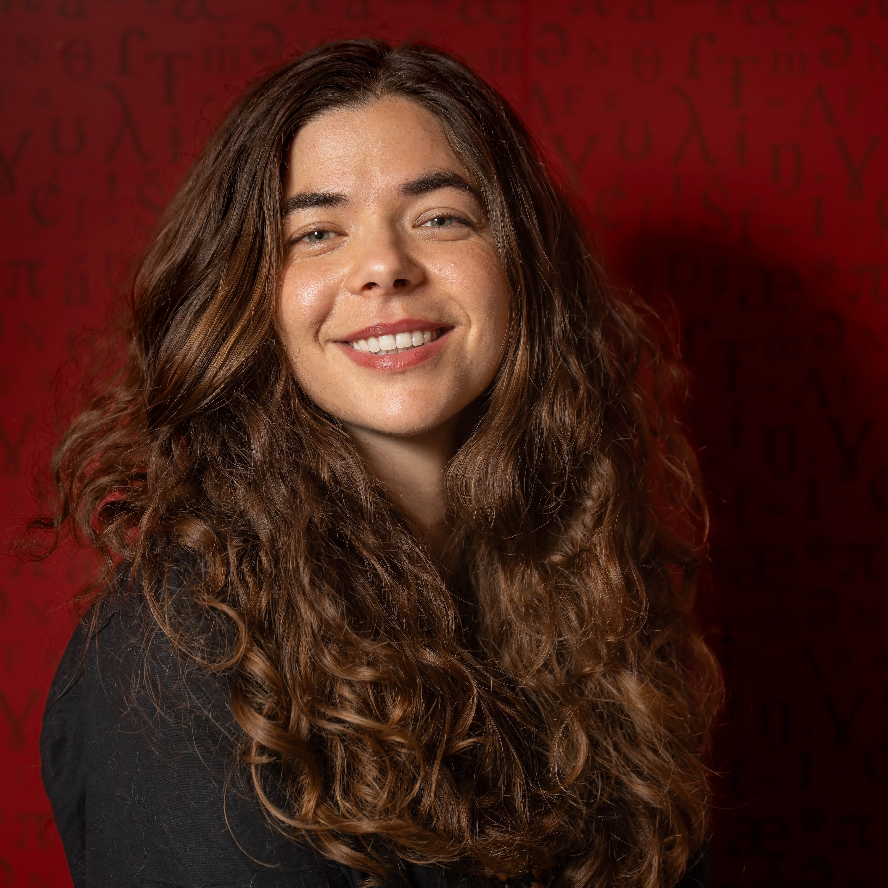

(she)

Email: isabel.papadimitriou at ubc.ca
Hello!
I am an assistant professor of Linguistics (and by courtesy Computer Science) at the University of British Columbia. Before that, I was a Kempner Fellow at Harvard, and before that I did my PhD in Computer Science at the Stanford NLP group, advised by Dan Jurafsky.
I am looking to recruit one or two students for the 2027 academic year. If you are applying for a PhD or masters, apply to UBC linguistics or CS and mention that you'd like to work with me.
I work on understanding and defining the capabilities of large language models in relation to the human language system.
I am especially interested in pursuing an interdisciplinary research program, combining computational empirical machine learning methods with theories of human cognition and language. Some questions I am interested in right now: how do language models represent abstract systems like syntax in a continuous space, and how do they get there through training? How do the very continuous parts of language, like subtle variations in meaning, interact with these generalized abstractions? Why do representations that mirror complex human cognitive processes arise with certain types of training?
Nov 2026: Talk at the UBC Language Sciences Institute
August 2026: Lecture at the 2026 School on Analytical Connectionism, "Understanding and assessing abstract generalization in continuous representation models:
June 2026: Invited talk at the Canadian Applied and Industrial Mathematics Society Annual Meeting (CAIMS 2026)
May 2026: Invited talk at the FLARE Workshop, "Syntax from data points: Understanding the learning and representation of structural abstraction in language models"
Feb 2026: Invited talk at UC Merced Mind, Technology, and Society speaker series, "What can we learn from language models? (About language structure, and beyond)
🌟 Oct 2025: Our VLM paper with Huangyuan and Thomas et al. was a spotlight paper at COLM
August 2025: Keynote at SyntaxFest 2025
April 2025: Guest lecture at Linguistics 83 (Harvard) (slides)
March 2025: Invited talk at Harvard LangCog Seminar
Feb 2025: Talk at the Rajan Lab
Jan 2025: Invited talk at the Seminar on Interactions between Formal and Computational Linguistics (ILFC)
Sep 2024: Started at the Kempner Institute at Harvard. If you are in the Boston area I would love to chat!
🏆 Aug 2024: Mission: Impossible Language Models got best paper at ACL 2024!
Nov 2023: Invited talk at the Georgia Tech Modern Languages Colloquium [slides]
I was selected for the 2023 Rising Stars in EECS
Stanford CS 224N, "Insights between NLP and Linguistics" [slides]
July 2023: Talks at Brown Computer Science, Carnegie Mellon LTI
June 2023: Talk at Decoding Communication in Nonhuman Species Workshop [slides] [recording]
Apr 2023: Talk at NYU CAP Lab
Dec 2022: Talk at Cornell University C.Psyd Group
July 2022: SIGTYP 2022 keynote [slides] [recording]
April 2022: Talk at UT Austin Computational Linguistics Group
Oct 2021: Talk at UC Santa Barbara Computational Linguistics Group
I'm very lucky to have started working with some wonderful students at UBC!
Past Students
Melvin Teo, Undergrad in Computer Science
Yuanao Wang, Masters in Data Sceince
Structure Before Collapse: Transient semantic geometry in next-token prediction - Yize Zhao, Isabel Papadimitriou*, and Christos Thramboulidis*, COLM 2026
Vocabulary embeddings organize linguistic structure early in language model training - Isabel Papadimitriou and Jacob Prince, COLM 2026
Investigating the interaction of linguistic and mathematical reasoning in language models using multilingual number puzzles - Antara Raaghavi Bhattacharya, Isabel Papadimitriou, Kathryn Davidson, and David Alvarez-Melis EMNLP 2025
Interpreting the Linear Structure of Vision-language Model Embedding Spaces - Isabel Papadimitriou*, Huangyuan (Chloe) Su*, Thomas Fel*, Sham Kakade, and Stephanie Gil, COLM 2025 spotlight presentation 🌟
Using Shapley interactions to understand how models use structure - Divyansh Singhvi, Diganta Misra, Andrej Erkelens, Raghav Jain, Isabel Papadimitriou*, and Naomi Saphra*, ACL 2025
Archetypal SAE: Adaptive and Stable Dictionary Learning for Concept Extraction in Large Vision Models - Thomas Fel, Ekdeep Singh Lubana, Jacob S. Prince, Matthew Kowal, Victor Boutin, Isabel Papadimitriou, Binxu Wang, Martin Wattenberg, Demba Ba, and Talia Konkle, ICML 2025
Mission: Impossible Language Models - Julie Kalini, Isabel Papadimitriou , Richard Futrell, Kyle Mahowald, and Christopher Potts, ACL 2024 Best Paper 🏆
Injecting structural hints: Using language models to study inductive biases in language learning - Isabel Papadimitriou and Dan Jurafsky, Findings of EMNLP 2023
Oolong: Investigating What Makes Crosslingual Transfer Hard with Controlled Studies - Zhengxuan Wu*, Alex Tamkin*, Isabel Papadimitriou*, EMNLP 2023 [pdf]
Separating the Wheat from the Chaff with BREAD: An open-source benchmark and metrics to detect redundancy in text - Isaac Caswell, Lisa Wang, Isabel Papadimitirou, GEM Workshop 2023
Multilingual BERT has an accent: Evaluating English influences on fluency in multilingual models - Isabel Papadimitriou* , Kezia Lopez*, and Dan Jurafsky, Findings of EACL 2023, SIGTYP 2023 [slides]
The Greek possessive modal eho as a special agentive modality - Isabel Papadimitriou and Cleo Condoravdi, LSA 2023 (poster) [abstract]
When classifying grammatical role, BERT doesn't care about word order... except when it matters - Isabel Papadimitriou , Richard Futrell, and Kyle Mahowald, ACL 2022 (oral presentation) [pdf] [code]
Language, Section 2.1 - Isabel Papadimitriou and Christopher D. Manning
In On the Opportunities and Risks of Foundation Models (full list of co-authors)
Deep Subjecthood: Higher-Order Grammatical Features in Multilingual BERT - Isabel Papadimitriou , Ethan A. Chi, Richard Futrell, and Kyle Mahowald, EACL 2021 (oral presentation) [pdf] [code]
Learning Music Helps You Read: Using transfer to study linguistic structure in language models - Isabel Papadimitriou and Dan Jurafsky, EMNLP 2020 (oral presentation) [pdf] [code]
I'm looking for PhD and masters students to join the lab, through both Linguistics and CS! The UBC NLP Group is growing, and we have many new faculty members and exciting research directions. We'd love to have you join! For working with me, are likely a good research match if your research interests are broadly in interpretability or computational cognitive linguistics.
I am generally looking for students who want to deeply understand how lanugage models work, who have a scientific interest in human language, and who have some experience working with machine learning. We are a very open-minded linguistics department, and a fun, interdisciplinary NLP group with research to suit many tastes.
You can apply for a PhD in Linguistics or CS, or for a masters (ling masters, CS masters). You can also apply to both departments. There are different experience requirements for the programs, and also slightly more funding sources available to support students through Linguistics, I'm happy to advise on which one is a better fit.
Wondering whether you should apply to linguistics or CS? For the linguistics PhD, you should feel relatively comfortable taking a few graduate linguistics courses (syntax/semantics/phonology) in your first year. This doesn't mean that you need to be an expert in those topics, but that you've had enough contact with linguistics for this to feel plausible. For CS, you would be co-advised by me and someone whose primary appointment is in CS (though I can still be your primary advisor/ make the admissions decision), so be sure to also think about who else from the UBC NLP Group you might be interested in working with.
The masters programs of both departments are funded research masters, and a great choice if you want a bit more research experience before applying to a PhD. You could also consider checking the PhD-track masters box in the CS masters application.
You should write my name in on CS applications, even though the drop-down list only has primary appointees. I'll only see your application if you write me in on the potential advisors field!
About my advising style I want my students to pursue the projects that most interest them. I have projects that I want to do, and a taste in what I prefer, but mostly I want my students to follow their passion in research. I aim to be available rather than necessarily hands-on: if students want very hands-on advising I can be coding in the trenches with you, but mostly I want to support my students so that the PhD is a scientifically fulfilling time.
I do not respond to clearly LLM-generated emails. In general, I tend to not reply to generic open-ended emails about joining the group, sorry.
I know that it can be hard to know what programs it is worth paying the fee to apply to, and this is why people email. So if it is useful to have a general sense: I do not have too many spots to recruit students, and so I'll berecruiting from students that have a clear interest in the kinds of questions that I work on (interpretability and related questions on the cognitive science of language). If this is not your wheelhouse, but you kind of see how a connection could be there between what I do and what you're interested in, it's unlikely that we're the best advisor-advisee match, sorry about that!
At UBC:
COLX 561, Computational Semantics I (COLX classes are for the Computational Linguistics masters degree)
COLX 563, Computational Semantics II
COLX 565, Understanding Language Models
Pre-UBC:
I was the TA for CS324H, History of Natural Language Processing, taught by Dan Jurafsky and Chris Manning in Winter 2024
I was a TA for CS224N, Natural Language Processing with Deep Learning, taught by Chris Manning in Winter 2023
I was the TA for the Independent Study in Machine Translation seminar taught by Noah Goodman in Winter 2020
At Berkeley I TAed CS70 Discrete Math and Probability Fall 2015, taught by Satish Rao and Jean Walrand
I did my undergraduate at Berkeley, where I studied Computer Science and in History. My history thesis was based on research at the archives of the League For Democracy in Greece, a London-based solidarity organisation supporting the left in the Greek Civil War. It received the Kirk Underhill Prize.
I often want a latex template of just a plain document, but where I can use ACL natbib as if I was writing a paper. If you do too, look here!
Did you ever want the word frequency counts of different words in the C4 corpus? I counted and uploaded them here.